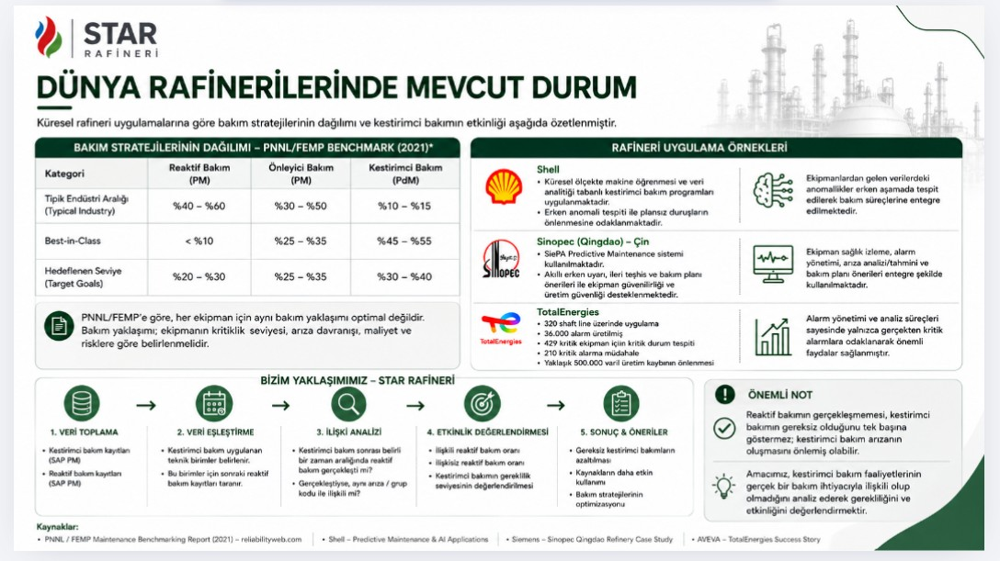

STAR Refinery: Maintenance Planning and Data Analysis
- Analyzed planned versus actual maintenance durations to find estimation errors and outliers in the data.
- Worked with maintenance records in SAP PM / SAP S/4HANA and Excel, including KPI analysis.
- Followed a five-step approach: data collection, data matching, relationship analysis, effectiveness evaluation, and results and recommendations.